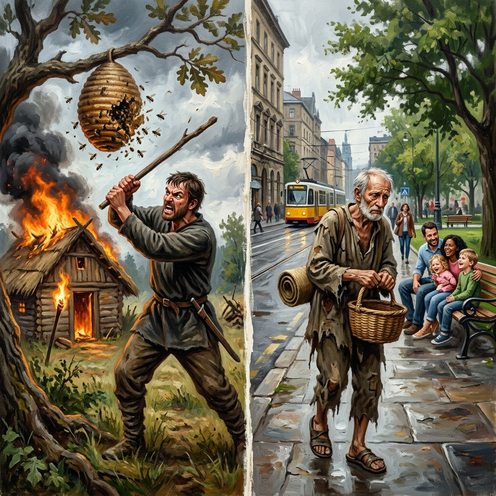
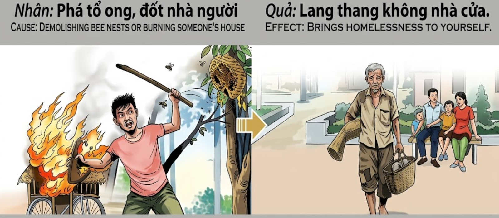

La Santidad del RefugioSanctity of RefugeSantità del Rifugio避难所的神圣قدسية المأوىСвятость кроваHeiligkeit der ZufluchtSainteté du refuge避難所の神聖さSantidade do RefúgioTôn Trọng Mái Ấm
Quien destruye el hogar ajeno, ya sea el nido de una criatura o la morada de un semejante, está demoliendo los cimientos de su propia seguridad; el karma no permite que posea un techo quien arrebató el refugio a otro.He who destroys another's home, whether it be a creature's nest or a fellow human's dwelling, is demolishing the foundations of his own security; karma does not allow him to possess a roof who took refuge from another.Chi distrugge la casa altrui, che sia il nido di una creatura o la dimora di un simile, sta demolendo le fondamenta della propria sicurezza; il karma non permette di possedere un tetto a chi ha sottratto il rifugio a un altro.破坏他人家园者，无论是生灵之巢还是同胞之所，都在摧毁自身安全的基石；业力绝不允许夺走他人避难所的人拥有自己的屋檐。من يدمر بيت غيره، سواء كان عشاً لمخلوق أو مسكناً لزميل إنسان، فإنه يهدم أسس أمنه الخاص؛ لن تسمح الكارما لمن سلب المأوى من غيره أن يمتلك سقفاً يحميه.Тот, кто разрушает чужой дом, будь то гнездо существа или жилище человека, подрывает основы собственной безопасности; карма не позволит иметь крышу над головой тому, кто лишил крова другого.Wer das Heim eines anderen zerstört, sei es das Nest eines Geschöpfes oder die Wohnung eines Mitmenschen, reißt das Fundament seiner eigenen Sicherheit nieder; das Karma erlaubt demjenigen, der einem anderen die Zuflucht nahm, keinen eigenen schützenden Dach.Celui qui détruit la maison d'autrui, qu'il s'agisse du nid d'une créature ou de la demeure d'un semblable, démolit les fondations de sa propre sécurité ; le karma ne permet pas à celui qui a arraché le refuge d'un autre de posséder un toit.生き物の巣であれ、仲間の住居であれ、他人の家を破壊する者は、自らの安全の基盤を解体しているのです。他人の避難所を奪った者に、カルマは屋根を持つことを許しません。Quem destrói o lar alheio, seja o ninho de uma criatura ou a morada de um semelhante, está a demolir os alicerces da sua própria segurança; o karma não permite que possua um tecto quem arrebatou o refúgio a outro.Kẻ nào phá hoại tổ ấm của kẻ khác, dù là tổ của một sinh linh hay nơi ở của đồng loại, kẻ đó đang tự phá đổ nền móng an nguy của chính mình; nhân quả không cho phép kẻ cướp đi nơi nương náu của người khác được sở hữu một mái nhà che thân.
Todo ser viviente busca un lugar donde sentirse a salvo. Desde el enjambre de abejas que protege su miel hasta el hombre que construye su cabaña para guarecerse de la lluvia, el refugio es un derecho sagrado de la existencia. Atacar este santuario por odio, descuido o crueldad es una de las ofensas más graves ante la ley del karma.
Muchos actúan con impulsividad, quemando malezas sin cuidado o destruyendo nidos por simple diversión, sin comprender que están rompiendo el equilibrio de la vida. Para la víctima, la pérdida de su hogar es una tragedia absoluta que deja su alma errante y desprotegida. Quien causa tal desolación atrae hacia sí la energía de la errancia.
El efecto kármico de la destrucción del refugio se manifiesta a menudo en la pérdida de la propia propiedad y estatus. En esta vida o en la siguiente, el infractor se encontrará vagando sin un lugar que pueda llamar suyo. La soledad del camino será su único techo, y la indiferencia de los demás su única compañía, hasta que aprenda que el hogar de cada ser es tan valioso como el suyo propio.
Every living being seeks a place to feel safe. From the swarm of bees protecting its honey to the man building his cabin to shelter from the rain, refuge is a sacred right of existence. Attacking this sanctuary out of hatred, neglect, or cruelty is one of the gravest offenses before the law of karma.
Many act impulsively, burning weeds carelessly or destroying nests for simple diversion, without understanding that they are breaking the balance of life. For the victim, the loss of its home is an absolute tragedy that leaves its soul wandering and unprotected. He who causes such desolation attracts to himself the energy of wandering.
The karmic effect of the destruction of refuge often manifests in the loss of one's own property and status. In this life or the next, the offender will find himself wandering without a place to call his own. The loneliness of the road will be his only roof, and the indifference of others his only company, until he learns that every being's home is as valuable as his own.
Ogni essere vivente cerca un luogo dove sentirsi al sicuro. Dallo sciame d'api que protegge il suo miele all'uomo que costruisce la sua capanna per ripararsi dalla pioggia, il rifugio è un diritto sacro dell'esistenza. Attaccare questo santuario per odio, incuria o crudeltà è una delle offese più gravi davanti alla legge del karma.
Molti agiscono impulsivamente, bruciando erbacce senza cura o distruggendo nidi per semplice divertimento, senza capire que stanno rompendo l'equilibrio della vita. Per la vittima, la perdita della propria casa è una tragedia assoluta que lascia la sua anima errante e indifesa. Chi causa tale desolazione attira su di sé l'energia dell'erranza.
L'effetto karmico della distruzione del rifugio si manifesta spesso nella perdita della propria proprietà e del proprio status. In questa vita o nella prossima, il trasgressore si troverà a vagare senza un luogo da chiamare proprio. La solitudine della strada sarà il suo unico tetto, e l'indifferenza degli altri la sua unica compagnia, finché non imparerà que la casa di ogni essere è preziosa quanto la sua.
每一个生灵都在寻求一个感到安全的地方。从保护蜂蜜的蜂群到建造小屋躲避雨淋的人，避难所是生存的神圣权利。出于仇恨、疏忽或残忍而攻击这个避难所是业力法则面前最严重的罪行之一。
许多人冲动行事，粗心地焚烧杂草或出于简单的消遣而破坏鸟巢，却不明白他们正在打破生命的平衡。对于受害者来说，失去家园是一场绝对的悲剧，让它的灵魂流浪且得不到保护。造成这种荒凉的人会把流浪的能量吸引到自己身上。
破坏避难所的业力效应通常表现为失去自己的财产和地位。在今生或来世，违规者会发现自己正在流浪，没有一个可以称之为家的地方。旅途的孤独将是他唯一的屋檐，他人的冷漠将是他唯一的伴侣，直到他学会每一个生灵的家园都和自己的家园一样宝贵。
يسعى كل كائن حي إلى العثور على مكان يشعر فيه بالأمان. من سرب النحل الذي يحمي عسله إلى الإنسان الذي يبني كوجه ليحتمي من المطر، المأوى هو حق مقدس للوجود. إن مهاجمة هذا المكان المقدس بدافع الكراهية أو الإهمال أو القسوة هي واحدة من أخطر المخالفات أمام قانون الكارما.
الكثيرون يتصرفون باندفاع، فيحرقون الأعشاب الضارة دون مبالاة أو يدمرون الأعشاش لمجرد التسلية، دون أن يدركوا أنهم يكسرون توازن الحياة. بالنسبة للضحية، فإن فقدان موطنها هو مأساة مطلقة تترك روحها هائمة وبلا حماية. من يسبب مثل هذا الخراب يجذب لنفسه طاقة التجوال.
غالباً ما يتجلى الأثر الكارمي لتدمير المأوى في فقدان الممتلكات والوضع الاجتماعي الخاص. في هذه الحياة أو التي تليها، سيجد الجاني نفسه هائماً دون مكان يخصه. ستكون وحدة الطريق هي سقفه الوحيد، ولامبالاة الآخرين هي رفقته الوحيدة، حتى يتعلم أن موطن كل كائن قيم مثل موطنه تماماً.
Каждое живое существо ищет место, где оно могло бы чувствовать себя в безопасности. От пчелиного роя, защищающего свой мед, до человека, строящего хижину, чтобы укрыться от дождя, кров — это священное право на существование. Нападение на это святилище из ненависти, небрежности или жестокости является одним из самых серьезных нарушений закона кармы.
Многие действуют импульсивно, неосторожно сжигая сорняки или разрушая гнезда ради забавы, не понимая, что они нарушают баланс жизни. Для жертвы потеря дома — абсолютная трагедия, которая оставляет ее душу блуждающей и незащищенной. Тот, кто сеет такое запустение, притягивает к себе энергию бродяжничества.
Кармический эффект разрушения крова часто проявляется в потере собственного имущества и статуса. В этой жизни или в следующей нарушитель обнаружит, что блуждает без места, которое мог бы назвать своим. Одиночество дороги будет его единственной крышей, а равнодушие окружающих — единственной компанией, пока он не поймет, что дом каждого существа так же ценен, как и его собственный.
Jedes Lebewesen sucht nach einem Ort, an dem es sich sicher fühlen kann. Vom Bienenschwarm, der seinen Honig schützt, bis hin zum Menschen, der seine Hütte baut, um sich vor dem Regen zu schützen, ist die Zuflucht ein heiliges Recht der Existenz. Dieses Heiligtum aus Hass, Nachlässigkeit oder Grausamkeit anzugreifen, ist eines der schwersten Vergehen vor dem Gesetz des Karmas.
Viele handeln impulsiv, brennen Unkraut achtlos nieder oder zerstören Nester zum bloßen Zeitvertreib, ohne zu verstehen, dass sie das Gleichgewicht des Lebens zerstören. Für das Opfer ist der Verlust seines Heims eine absolute Tragödie, die seine Seele umherirren und schutzlos zurücklässt. Wer solche Trostlosigkeit verursacht, zieht die Energie des Umherirrens an sich.
Die karmische Auswirkung der Zerstörung der Zuflucht manifestiert sich oft im Verlust des eigenen Eigentums und Status. In diesem oder im nächsten Leben wird sich der Täter ohne einen Ort wiederfinden, den er sein Eigen nennen kann. Die Einsamkeit der Straße wird sein einziges Dach sein und die Gleichgültigkeit anderer seine einzige Gesellschaft, bis er lernt, dass das Heim jedes Wesens genauso wertvoll ist wie sein eigenes.
Tout être vivant cherche un endroit où se sentir en sécurité. De l'essaim d'abeilles protégeant son miel à l'homme construisant sa cabane pour s'abriter de la pluie, le refuge est un droit sacré de l'existence. Attaquer ce sanctuaire par haine, négligence ou cruauté est l'une des offenses les plus graves devant la loi du karma.
Beaucoup agissent avec impulsivité, brûlant des mauvaises herbes sans précaution ou détruisant des nids pour le simple plaisir, sans comprendre qu'ils rompent l'équilibre de la vie. Pour la victime, la perte de son foyer est une tragédie absolue qui laisse son âme errante et sans protection. Celui qui cause une telle désolation attire à lui l'énergie de l'errance.
L'effet karmique de la destruction du refuge se manifeste souvent par la perte de ses propres biens et de son statut. Dans cette vie ou dans la suivante, le contrevenant se retrouvera errant sans un endroit qu'il pourra appeler le sien. La solitude de la route sera son seul toit et l'indifférence des autres sa seule compagnie, jusqu'à ce qu'il apprenne que le foyer de chaque être est aussi précieux que le sien.
すべての生き物は、安全だと感じられる場所を求めています。蜜を守るミツバチの群れから、雨をしのぐために小屋を建てる人間まで、避難所は生存の神聖な権利です。憎しみ、不注意、あるいは残酷さからこの聖域を攻撃することは、カルマの法則において最も重大な罪の一つです。
多くの人が衝動的に行動し、不注意に雑草を燃やしたり、単なる気晴らしに巣を破壊したりしますが、それが生命のバランスを壊していることに気づいていません。犠牲者にとって、家を失うことは魂を放浪させ、無防備な状態にする絶対的な悲劇です。そのような荒廃をもたらす者は、放浪のエネルギーを自分に引き寄せます。
避難所の破壊によるカルマの影響は、しばしば自身の財産や地位の喪失として現れます。今世または来世において、違反者は自分の家と呼べる場所もなく放浪することになるでしょう。道の孤独が唯一の屋根となり、他人の無関心が唯一の伴侶となるでしょう。すべての存在の家が自分の家と同じように価値があることを学ぶまで、それは続きます。
Todo o ser vivo procura um lugar onde se sinta a salvo. Desde o enxame de abelhas que protege o seu mel até ao homem que constrói a sua cabana para se abrigar da chuva, o refúgio é um direito sagrado da existência. Atacar este santuário por ódio, descuido ou crueldade é uma das ofensas mais graves perante a lei do karma.
Muitos actuam com impulsividade, queimando ervas daninhas sem cuidado ou destruindo ninhos por simples diversão, sem compreender que estão a quebrar o equilíbrio da vida. Para a vítima, a perda do seu lar é uma tragédia absoluta que deixa a sua alma errante e desprotegida. Quem causa tal desolação atrai para si a energia da errância.
O efeito cármico da destruição do refúgio manifesta-se muitas vezes na perda da própria propriedade e estatuto. Nesta vida ou na seguinte, o infractor encontrar-se-á vagando sem um lugar que possa chamar seu. A solidão do caminho será o seu único tecto, e a indiferença dos outros a sua única companhia, até que aprenda que o lar de cada ser é tão valioso como o seu próprio.
Mọi sinh vật sống đều tìm kiếm một nơi để cảm thấy an toàn. Từ đàn ong bảo vệ mật ngọt cho đến con người xây dựng túp lều để trú mưa, nơi nương tựa là một quyền thiêng liêng của sự tồn tại. Tấn công vào thánh đường này vì lòng thù hận, sự bất cẩn hay ác tâm là một trong những tội lỗi nghiêm trọng nhất trước luật nhân quả.
Nhiều người hành động bốc đồng, đốt cỏ rác không cẩn thận hoặc phá tổ chim chỉ để tiêu khiển, mà không hiểu rằng họ đang phá vỡ sự cân bằng của sự sống. Đối với nạn nhân, việc mất đi tổ ấm là một bi kịch tuyệt đối khiến linh hồn họ lạc lõng và không còn được bảo vệ. Kẻ nào gây ra sự tan hoang như vậy sẽ tự thu hút năng lượng của sự lang thang về phía mình.
Hệ quả nhãn tiền của việc phá hoại nơi ở thường biểu hiện qua việc mất mát tài sản và địa vị của chính mình. Trong kiếp này hoặc kiếp sau, kẻ vi phạm sẽ thấy mình phiêu dạt, không có nơi nào để gọi là nhà. Sự cô độc trên đường đời sẽ là mái nhà duy nhất, và sự thờ ơ của người đời sẽ là bạn đồng hành duy nhất của họ, cho đến khi họ học được rằng tổ ấm của mỗi chúng sinh đều quý giá như chính nhà của mình vậy.
El Buscador de Leña y el Enjambre Sagrado
The Woodcutter and the Sacred Swarm
Il Cercatore di Legna e lo Sciame Sacro
伐木工与神圣蜂群
الباحث عن الخشب والسرب المقدس
Дровосек и священный рой
Der Holzsammler und der heilige Schwarm
Le chercheur de bois et l'essaim sacré
薪拾いと神聖な蜂の群れ
O Caminhante e o Enxame Sagrado
Gã Tiều Phu Và Đàn Ong Mật
En las montañas de Sapa, vivía un hombre llamado Vinh que se ganaba la vida vendiendo madera. Un día, mientras buscaba un gran roble, encontró uno perfecto, pero en su rama más alta colgaba un inmenso panal de abejas. En lugar de elegir otro árbol, Vinh, molesto por el zumbido, prendió una antorcha y quemó el panal, riendo mientras las abejas caían al fuego. Luego, taló el árbol sin remordimiento.
Esa misma noche, una tormenta eléctrica azotó la montaña. Un rayo cayó sobre la cabaña de Vinh, reduciéndola a cenizas en minutos. Vinh se encontró bajo la lluvia, sin nada más que la ropa que llevaba puesta. Intentó pedir posada, pero extrañas circunstancias hacían que cada puerta se cerrara ante él o que los refugios que encontraba se derrumbaran poco después de su llegada.
Pasaron años y Vinh se convirtió en un mendigo errante. Un día, descansando bajo un árbol, vio a un niño protegiendo un pequeño nido de pájaros que había caído. El niño le ofreció un trozo de pan. Vinh lloró al recordar su crueldad pasada y dijo con voz quebrada: 'Por un momento de molestia destruí mil vuelos y un hogar perfecto; ahora el cielo me ha dado el mundo entero por casa, pero ninguna puerta por refugio'. Solo en ese momento de arrepentimiento, el peso kármico comenzó a aligerarse.
In the mountains of Sapa, there lived a man named Vinh who made a living selling wood. One day, while looking for a large oak, he found a perfect one, but on its highest branch hung an immense honeycomb. Instead of choosing another tree, Vinh, annoyed by the buzzing, lit a torch and burned the honeycomb, laughing as the bees fell into the fire. Then, he cut down the tree without remorse.
That same night, a thunderstorm struck the mountain. Lightning hit Vinh's cabin, reducing it to ashes in minutes. Vinh found himself in the rain, with nothing but the clothes he was wearing. He tried to ask for lodging, but strange circumstances made every door close before him or the shelters he found collapse shortly after his arrival.
Years passed and Vinh became a wandering beggar. One day, resting under a tree, he saw a boy protecting a small bird's nest that had fallen. The boy offered him a piece of bread. Vinh cried remembering his past cruelty and said in a broken voice: 'For a moment of annoyance I destroyed a thousand flights and a perfect home; now heaven has given me the entire world for a house, but no door for refuge'. Only at that moment of repentance did the karmic weight begin to lighten.
Sulle montagne di Sapa viveva un uomo di nome Vinh que si guadagnava da vivere vendendo legna. Un giorno, mentre cercava una grande quercia, ne trovò una perfetta, ma sul suo ramo più alto pendeva un immenso favo di api. Invece di scegliere un altro albero, Vinh, infastidito dal ronzio, accese una torcia e bruciò il favo, ridendo mentre le api cadevano nel fuoco. Poi, abbatté l'albero senza rimorso.
Quella stessa notte, un temporale si abbatté sulla montagna. Un fulmine colpì la capanna di Vinh, riducendola in cenere in pochi minuti. Vinh si ritrovò sotto la pioggia, con nient'altro que i vestiti que indossava. Cercò di chiedere ospitalità, ma strane circostanze facevano sì que ogni porta si chiudesse davanti a lui o que i rifugi que trovava crollassero poco dopo il suo arrivo.
Passarono gli anni e Vinh divenne un mendicante errante. Un giorno, riposando sotto un albero, vide un bambino que proteggeva un piccolo nido di uccelli que era caduto. Il bambino gli offrì un pezzo di pane. Vinh pianse ricordando la sua passata crudeltà e disse con voce rotta: 'Per un momento di fastidio ho distrutto mille voli e una casa perfetta; ora il cielo mi ha dato il mondo intero per casa, ma nessuna porta come rifugio'. Solo in quel momento di pentimento, il peso karmico iniziò ad alleggerirsi.
在沙巴的山区，住着一个名叫 Vinh 的男人，他靠卖木材为生。一天，他在寻找一棵大橡树时，发现了一棵完美的橡树，但在它最高的树枝上挂着一个巨大的蜂巢。Vinh 不但没有选择另一棵树，反而被嗡嗡声惹恼了，他点燃火把烧毁了蜂巢，看着蜜蜂落入火中大笑。然后，他毫无悔意地砍倒了那棵树。
就在那天晚上，一场雷雨袭击了那座山。一道雷电击中了 Vinh 的小屋，几分钟内就将其化为灰烬。Vinh 发现自己在雨中，除了身上穿的衣服什么都没有。他试图请求住宿，但奇怪的情况让每一扇门都在他面前关闭，或者他找到的避难所在他到达后不久就倒塌了。
几年过去了，Vinh 变成了一个流浪的乞丐。一天，他在一棵树下休息时，看到一个男孩正在保护一个掉下来的小鸟巢。男孩给了他一块面包。Vinh 想起过去的残忍，哭着破碎的声音说：“因为一时的恼怒，我毁掉了一千次飞行和一个完美的家；现在上天给了我整个世界作为房子，却没有一扇门可以避难。”直到那一刻的悔过，业力的重量才开始减轻。
في جبال سابا، عاش رجل يدعى فينه كان يكسب رزقه من بيع الأخشاب. ذات يوم، وبينما كان يبحث عن شجرة بلوط كبيرة، وجد واحدة مثالية، لكن في أعلى غصن فيها كان يتدلى قرص عسل ضخم. بدلاً من اختيار شجرة أخرى، قام فينه، الذي أزعجه الطنين، بإشعال شعلة وحرق قرص العسل، ضاحكاً بينما كان النحل يسقط في النار. ثم قطع الشجرة دون ندم.
في تلك الليلة نفسها، ضربت عاصفة رعدية الجبل. ضرب البرق كوخ فينه، فالتهمته النيران في دقائق. وجد فينه نفسه تحت المطر، ولا يملك سوى الملابس التي كان يرتديها. حاول طلب المأوى، لكن ظروفاً غريبة جعلت كل باب يغلق أمامه أو تنهار الملاجئ التي وجدها بعد وصوله بفترة وجيزة.
مرت السنين وأصبح فينه متسولاً تائهاً. ذات يوم، وبينما كان يستريح تحت شجرة، رأى صبياً يحمي عش عصفور صغيراً سقط من الشجرة. قدم له الصبي قطعة خبز. بكى فينه متذكراً قسوته الماضية وقال بصوت مكسور: 'من أجل لحظة انزعاج دمرت ألف رحلة وبيتًا مثاليًا؛ الآن منحني السماء العالم كله كمنزل، لكن لا يوجد باب للمأوى'. فقط في تلك اللحظة من الندم، بدأ ثقل الكارما يخف.
В горах Сапа жил человек по имени Винь, который зарабатывал на жизнь продажей древесины. Однажды, в поисках большого дуба, он нашел идеальное дерево, но на его самой высокой ветке висели огромные пчелиные соты. Вместо того чтобы выбрать другое дерево, Винь, раздраженный жужжанием, зажег факел и сжег соты, смеясь, когда пчелы падали в огонь. Затем он без зазрения совести срубил дерево.
В ту же ночь в горах разразилась гроза. Молния ударила в хижину Виня, за считанные минуты превратив ее в пепел. Винь оказался под дождем, не имея ничего, кроме одежды, которая была на нем. Он пытался просить ночлега, но странные обстоятельства заставляли каждую дверь закрываться перед ним, а убежища, которые он находил, рушились вскоре после его прихода.
Прошли годы, и Винь стал бродячим нищим. Однажды, отдыхая под деревом, он увидел мальчика, который оберегал упавшее птичье гнездо. Мальчик предложил ему кусок хлеба. Винь заплакал, вспоминая свою прошлую жестокость, и сказал упавшим голосом: «Из-за мимолетного раздражения я погубил тысячу полетов и идеальный дом; теперь небо дало мне весь мир в качестве дома, но не дало ни одной двери для крова». Только в этот момент раскаяния кармический груз начал становиться легче.
In den Bergen von Sapa lebte ein Mann namens Vinh, der seinen Lebensunterhalt mit dem Verkauf von Holz verdiente. Eines Tages, auf der Suche nach einer großen Eiche, fand er eine perfekte, aber an ihrem höchsten Ast hing eine riesige Bienenwabe. Anstatt einen anderen Baum zu wählen, zündete Vinh, verärgert über das Summen, eine Fackel an und verbrannte die Wabe, während er lachte, als die Bienen ins Feuer fielen. Dann fällte er den Baum ohne Gewissensbisse.
In derselben Nacht suchte ein Gewitter den Berg heim. Ein Blitz schlug in Vinhs Hütte ein und verwandelte sie in Minuten in Asche. Vinh fand sich im Regen wieder, mit nichts als der Kleidung, die er am Leib trug. Er versuchte, um Unterkunft zu bitten, aber seltsame Umstände führten dazu, dass jede Tür vor ihm verschlossen blieb oder die Unterkünfte, die er fand, kurz nach seiner Ankunft einstürzten.
Jahre vergingen und Vinh wurde ein wandernder Bettler. Eines Tages, als er unter einem Baum ausruhte, sah er einen Jungen, der ein kleines, herabgefallenes Vogelnest schützte. Der Junge bot ihm ein Stück Brot an. Vinh weinte, als er sich an seine vergangene Grausamkeit erinnerte, und sagte mit brüchiger Stimme: 'Für einen Moment des Ärgers zerstörte ich tausend Flüge und ein perfektes Heim; jetzt hat mir der Himmel die ganze Welt als Haus gegeben, aber keine Tür als Zuflucht'. Erst in diesem Moment der Reue begann die karmische Last leichter zu werden.
Dans les montagnes de Sapa vivait un homme nommé Vinh qui gagnait sa vie en vendant du bois. Un jour, en cherchant un grand chêne, il en trouva un parfait, mais sur sa branche la plus haute pendait un immense rayon de miel. Au lieu de choisir un autre arbre, Vinh, agacé par le bourdonnement, alluma une torche et brûla le nid, riant tandis que les abeilles tombaient dans le feu. Ensuite, il abattit l'arbre sans remords.
Cette nuit-là, un violent orage frappa la montagne. La foudre tomba sur la cabane de Vinh, la réduisant en cendres en quelques minutes. Vinh se retrouva sous la pluie, avec pour seuls biens les vêtements qu'il portait. Il tenta de demander l'asile, mais d'étranges circonstances faisaient que chaque porte se fermait devant lui ou que les abris qu'il trouvait s'effondraient peu après son arrivée.
Les années passèrent et Vinh devint un mendiant errant. Un jour, se reposant sous un arbre, il vit un petit garçon protégeant un petit nid d'oiseau tombé au sol. Le garçon lui offrit un morceau de pain. Vinh pleura en se souvenant de sa cruauté passée et dit d'une voix brisée : « Pour un moment d'agacement, j'ai détruit mille vols et un foyer parfait ; maintenant le ciel m'a donné le monde entier pour maison, mais aucune porte pour refuge ». Ce n'est qu'à cet instant de repentir que le poids karmique commença à s'alléger.
サパの山々に、薪を売って生計を立てているヴィンという男が住んでいました。ある日、大きなオークの木を探していると、完璧な木を見つけましたが、その一番高い枝には巨大なミツバチの巣がかかっていました。別の木を選ぶ代わりに、ヴィンはその羽音に腹を立て、松明に火をつけて巣を焼き払い、ハチが火の中に落ちていくのを見て笑いました。そして、何のためらいもなくその木を切り倒しました。
その同じ夜、激しい雷雨が山を襲いました。ヴィンの小屋に落雷し、わずか数分で灰になりました。ヴィンは着ている服以外何も持たずに雨の中に放り出されました。彼は宿を求めようとしましたが、奇妙な巡り合わせで、行く先々のドアが彼の前で閉ざされるか、見つけた避難所も彼の到着直後に崩壊してしまいました。
年月が流れ、ヴィンは放浪の物乞いになりました。ある日、木の下で休んでいると、落ちてしまった小鳥の巣を守っている少年を見かけました。少年は彼にパンを一切れ差し出しました。ヴィンは過去の残酷さを思い出して涙を流し、震える声で言いました。「一時のいら立ちのために、千の飛翔と完璧な家を壊してしまった。今、天は世界中を私の家として与えてくれたが、避難するためのドアは一つも与えてくれないのだ」。その悔恨の瞬間に初めて、カルマの重荷が軽くなり始めました。
Nas montanhas de Sapa, vivia um homem chamado Vinh que ganhava a vida vendendo madeira. Um dia, enquanto procurava um grande carvalho, encontrou um perfeito, mas no seu ramo mais alto pendia um imenso favo de abelhas. Em vez de escolher outra árvore, Vinh, irritado com o zumbido, acendeu uma tocha e queimou o favo, rindo enquanto as abelhas caíam no fogo. Depois, abateu a árvore sem remorso.
Nessa mesma noite, uma trovoada atingiu a montanha. Um raio caiu sobre a cabana de Vinh, reduzindo-a a cinzas em minutos. Vinh encontrou-se debaixo da chuva, sem nada mais do que a roupa que levava vestida. Tentou pedir pousada, mas estranhas circunstâncias faziam com que cada porta se fechasse diante dele ou que os refúgios que encontrava desabassem pouco depois da sua chegada.
Passaram anos e Vinh tornou-se um mendigo errante. Um día, descansando debaixo de uma árvore, viu um menino protegendo um pequeno ninho de pássaros que tinha caído. O menino ofereceu-lhe um pedaço de pão. Vinh chorou ao recordar a sua crueldade pasada e disse com voz quebrada: 'Por um momento de moléstia destruí mil voos e um lar perfeito; agora o céu deu-me o mundo inteiro por casa, mas nenhuma porta por refúgio'. Só nesse momento de arrependimento, o peso cármico começou a aliviar-se.
Vùng núi Sa Pa có một gã tiều phu tên Vinh, chuyên sống bằng nghề đốn cỗ. Một ngày nọ, khi đang tìm một cây sồi lớn, hắn thấy một cây tuyệt đẹp, nhưng trên cành cao nhất lại lủng lẳng một tổ ong mật khổng lồ. Thay vì chọn cây khác, Vinh vì khó chịu với tiếng vo ve đã đốt một ngọn đuốc và thiêu rụi tổ ong, cười khoái chí khi thấy đàn ong rơi vào lửa đỏ. Sau đó, hắn không ngần ngại đốn hạ cái cây.
Ngay đêm đó, một trận giông bão kinh hoàng ập xuống vùng núi. Một tia sét đã đánh trúng căn chòi của Vinh, thiêu rụi nó thành tro tàn chỉ trong vài phút. Vinh thấy mình đứng dưới mưa, không còn gì ngoài bộ quần áo trên người. Hắn cố gắng xin ngủ nhờ, nhưng một sự kỳ lạ nào đó khiến mọi cánh cửa đều đóng sầm trước mặt hắn, hoặc những nơi hắn vừa bước vào đều sụp đổ ngay sau đó.
Nhiều năm trôi qua, Vinh trở thành một kẻ ăn xin lang thang. Một ngày nọ, khi đang nghỉ dưới gốc cây, hắn thấy một cậu bé đang che chở cho một tổ chim nhỏ bị rơi. Cậu bé chia cho hắn một mẩu bánh mì. Vinh khóc nức nở khi nhớ lại sự độc ác của mình năm xưa và thốt lên: 'Chỉ vì một phút bực dọc, ta đã hủy hoại ngàn đôi cánh và một mái ấm hoàn hảo; giờ đây trời cao cho ta cả thế giới để làm nhà, nhưng chẳng cho ta lấy một cánh cửa để nương náu'. Phải đến giây phút sám hối đó, gánh nặng nhân quả mới bắt đầu vơi đi.

La Inspiración Original
The Original Inspiration
Nguồn cảm hứng ban đầu
L'ispirazione originale
最初的灵感
الإلهام الأصلي
Оригинальное вдохновение
Die ursprüngliche Inspiration
L'inspiration originale
オリジナルのインスピレーション
A ispirazione originale
La historia que hemos relatado en este capítulo está inspirada por el pasaje de la escena original de los murales «Tranh Nhân Quả» (Ilustraciones del Karma) del Templo Linh Ung en Da Nang, capturado en la imagen.
The story we have told in this chapter is inspired by the passage from the original scene of the “Tranh Nhân Quả” (Illustrations of Karma) murals of the Linh Ung Temple in Da Nang, captured in the image.
Câu chuyện chúng tôi kể trong chương này được lấy cảm hứng từ đoạn trích từ cảnh gốc của bức tranh tường “Tranh Nhân Quả” ở chùa Linh Ứng ở Đà Nẵng, được ghi lại trong hình ảnh.
La storia que abbiamo raccontato in questo capitolo è ispirata al passaggio della scena originale dei murali “Tranh Nhân Quả” (Ilustrazioni del Karma) del Tempio Linh Ung a Da Nang, catturati nell'immagine.
我们在本章中讲述的故事的灵感来自图像中捕获的岘港灵应寺“Tranh Nhân Quả”（业力插图）壁画的原始场景。
القصة التي رويناها في هذا الفصل مستوحاة من مقطع من المشهد الأصلي لجداريات 'ترانه نهan كو' (الرسوم التوضihuية للكارما) لمعبد لينه أونغ في دا نانغ، الملتقطة في الصورة.
История, которую мы рассказали в этой главе, вдохновлена отрывком из оригинальной сцены фрески «Тран Нхан Ку» («Иллюстрации кармы») храма Линь Унг в Дананге, запечатленной на изображении.
Die Geschichte, die wir in diesem Kapitel erzählt haben, ist inspiriert von der Passage aus der Originalszene der Wandgemälde „Tranh Nhân Quả“ (Illustrationen von Karma) des Linh Ung-Tempels in Da Nang, die im Bild festgehalten ist.
L'histoire que nous avons racontée dans ce chapitre est inspirée du passage de la scène originale des peintures murales « Tranh Nhân Quả » (Illustrations du Karma) du temple Linh Ung à Da Nang, capturées dans l'image.
この章で私たちが語った物語は、ダナンのリンウン寺院の壁画「Tranh Nhân Quả」（カルマの図）の元のシーンの一節からインスピレーションを得て、画像に収められています。
A história que contamos neste capítulo é inspirada na passagem da cena original dos murais “Tranh Nhân Quả” (Ilustrações do Karma) do Templo Linh Ung em Da Nang, capturada na imagem.

Como se puede apreciar en el pasaje extraído del mural, la causa y su efecto kármico están descritos originalmente en vietnamita y con una breve traducción al inglés. A continuación, te ofrecemos su traducción detallada en los distintos idiomas:
As can be seen in the passage taken from the mural, the cause and its karmic effect are originally described in Vietnamese and with a brief translation into English. Below, we offer you its detailed translation in the different languages:
🇻🇳 Tiếng Việt:
Nhân: Phá tổ ong, đốt nhà người.
Quả: Lang thang không nhà cửa.
🇬🇧 English:
Cause: Demolishing bee nests or burning someone's house.
Effect: Brings homelessness to yourself.
Traducción Recreada:
Causa: Demoler panales de abejas o quemar la casa de alguien.
Efecto: Te trae la falta de hogar.
Recreated Translation:
Cause: Demolishing bee nests or burning someone's house.
Effect: Brings homelessness to yourself.
Traduzione ricreata:
Causa: Demolire favi di api o bruciare la casa di qualcuno.
Effetto: Ti porta alla mancanza di una casa.
重新创建的翻译:
起因：拆除蜂巢或焚烧他人的房屋。
结果：让你自己无家可归。
الترجمة المعاد صياغتها:
السبب: تدمير أعشاش النحل أو حرق منزل شخص ما.
الأثر: يجلب لك التشريد.
Воссозданный перевод:
Причина: Разрушение пчелиных гнезд или поджог чьего-то дома.
Следствие: Делает тебя бездомным.
Neu erstellte Übersetzung:
Ursache: Bienennester zerstören oder das Haus von jemandem niederbrennen.
Wirkung: Bringt dir Obdachlosigkeit.
Traduction recréée:
Cause : Démolir des nids d'abeilles ou brûler la maison de quelqu'un.
Effet : Vous apporte l'itinérance.
再作成された翻訳:
原因：ミツバチの巣を壊す、または他人の家を燃やすこと。
影響：自分自身にホームレス状態をもたらす。
Tradução recriada:
Causa: Demolir colmeias de abelhas ou queimar a casa de alguém.
Efeito: Traz-te a falta de casa.